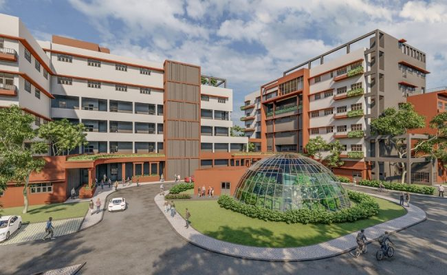
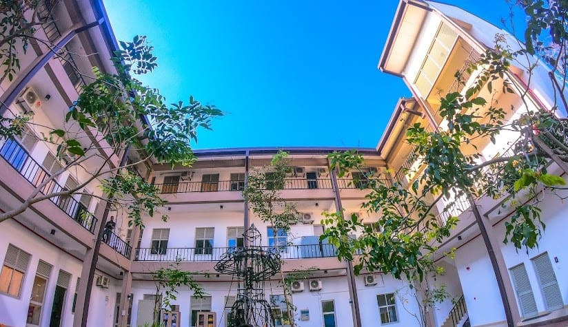

ABOUT THE FACULTY
The Technology program was commenced on January 2017 at Rajarata University of Sri lanka Mihintale centralizing
the Faculty of Applied Sciences. At present the Faculty consists with five Departments Bio Process Technology,
Electrical & Electronic Technology, Food Technology, Information & Communication Technology and Materials
Technology in which it collaborates with a vivid and unique structure to the national and international
industry base. Students are facilitated with well equipped laboratories, lecturer theaters and multi media
units. In addition to that students are also bounded by a research driven environment which it design and
implement opportunities for all levels of undergraduates.

HISTORY OF THE FACULTY
If you’re an educational professional who are looking to progress into the world of enhancing technologies,
or collaborative researches or an enthusiastic active leaner this is the best place for you. The Technology
Program inaugurated at the faculty of Applies Sciences in January 2017. Despite the commencement of these
programs under Faculty of Applies Sciences, a separate Faculty of Technology is currently established in due
course which includes five departments and accommodating an estimated intake of 245 students annually.
At present the Faculty consists with five Departments of Bio Process Technology, Electrical & Electronic
Technology, Food Technology, Information & Communication Technology and Materials Technology in which it
collaborates with a vivid and unique structure to the national and international industry base. Students
are facilitated with well-equipped laboratories, lecturer theaters and multimedia units providing a research
driven and industry oriented environment targeting their future goals.